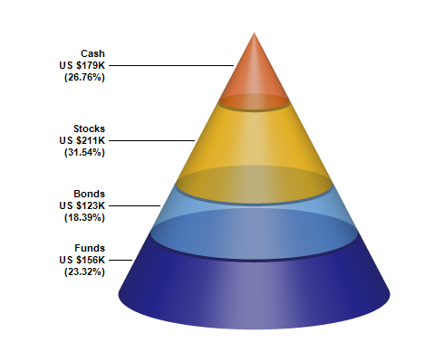

This example demonstrates using PyramidChart.setConeSize to specify using a cone instead of a pyramid to represent the data.
ChartDirector 7.1 (C++ Edition)
Cone Chart

Source Code Listing
#include "chartdir.h"
int main(int argc, char *argv[])
{
// The data for the pyramid chart
double data[] = {156, 123, 211, 179};
const int data_size = (int)(sizeof(data)/sizeof(*data));
// The labels for the pyramid chart
const char* labels[] = {"Funds", "Bonds", "Stocks", "Cash"};
const int labels_size = (int)(sizeof(labels)/sizeof(*labels));
// The semi-transparent colors for the pyramid layers
int colors[] = {0x60000088, 0x6066aaee, 0x60ffbb00, 0x60ee6622};
const int colors_size = (int)(sizeof(colors)/sizeof(*colors));
// Create a PyramidChart object of size 480 x 400 pixels
PyramidChart* c = new PyramidChart(480, 400);
// Set the cone center at (280, 180), and width x height to 150 x 300 pixels
c->setConeSize(280, 180, 150, 300);
// Set the elevation to 15 degrees
c->setViewAngle(15);
// Set the pyramid data and labels
c->setData(DoubleArray(data, data_size), StringArray(labels, labels_size));
// Set the layer colors to the given colors
c->setColors(Chart::DataColor, IntArray(colors, colors_size));
// Leave 1% gaps between layers
c->setLayerGap(0.01);
// Add labels at the left side of the pyramid layers using Arial Bold font. The labels will have
// 3 lines showing the layer name, value and percentage.
c->setLeftLabel("{label}\nUS ${value}K\n({percent}%)", "Arial Bold");
// Output the chart
c->makeChart("cone.png");
//free up resources
delete c;
return 0;
}